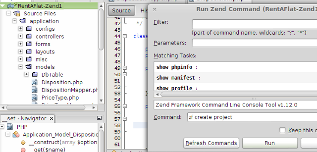

Out of the box support for most used web frameworks like Zend, Symfony, Doctrine, Smarty
NetBeans IDE supports the following popular web frameworks:
In general, you can create new PHP projects with these frameworks, run framework commands, navigate from controller (action) to its view, use framework annotations and code-completion in the editor and customize its settings.

You can use NetBeans PHP IDE to generate PHP code documentation with ApiGen. You must download ApiGen yourself and make certain in the IDE Options that the IDE recognizes the ApiGen installation and that the IDE has found the correct path to the ApiGen script. After you set everything up correctly, all you have to do is right-click a project node and select Generate Documentation. The IDE generates the documentation files in the location of your choice.
ORM using Doctrine2 Framework |
Dependencies via Composer |
Smarty Templates |
|
|
|
|
Twig Templates |
||
|
|
The IDE provides a support for Twig templates (which are closely connected with Symfony Framework). It provides a code completion for all of Twig elements. It means Tags, Filters, Functions, Tests and Operators. All elements are also docummented. One can also use a build-in code templates support. |
|